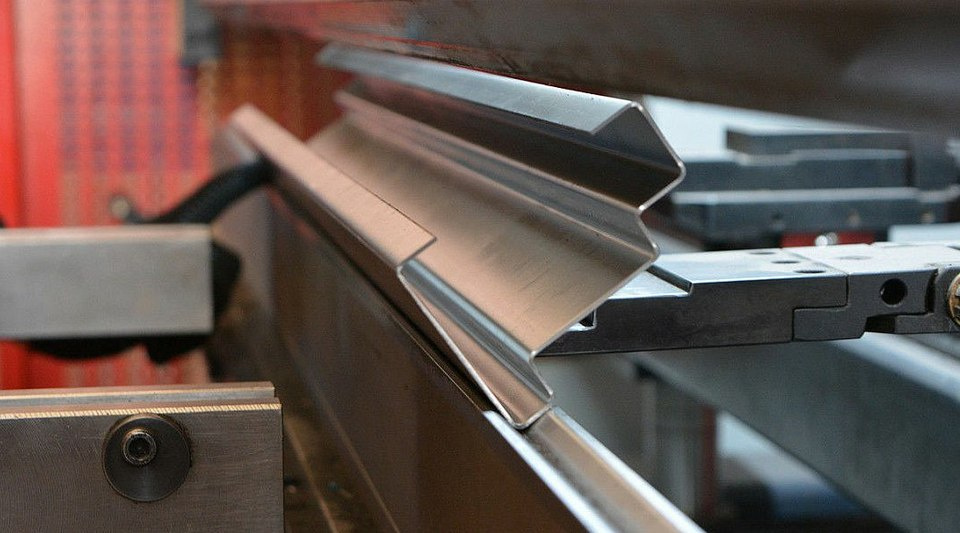

Лазерне різання
Чудово підібрані надійні компоненти високої якості та сучасні технології дають можливість проводити різання листового металу максимально ефективно з точки зору усіх трьох найважливіших параметрів - швидкість, якість, вартість.
Гнуття металу
Якісне гнуття листового металу напряму залежить від точності налагодження обладнання та його збірки .Саме такими важливими характеристиками на високому рівні забезпечені листогини на нашому виробництві.


Лазерне зварювання
Апарат дозволяє проводити процес лазерного зварювання з надзвичайною точністю та якістю зварного шва. Зварювання проводиться в азотному або аргонному газовому серидовищі. Швидкість автоматизованої подачі проволоки до 17м/хв, що робить процес надзвичайно продуктивним.